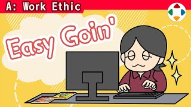
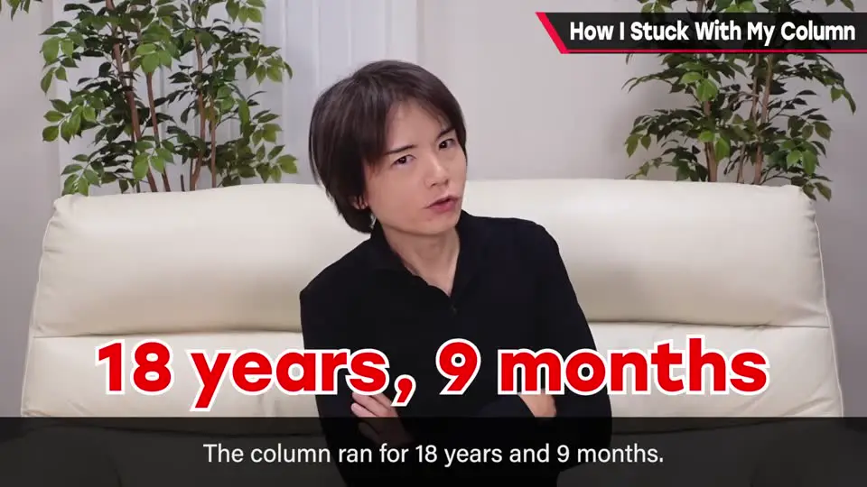
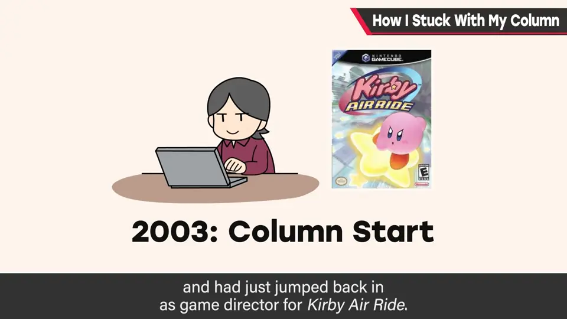
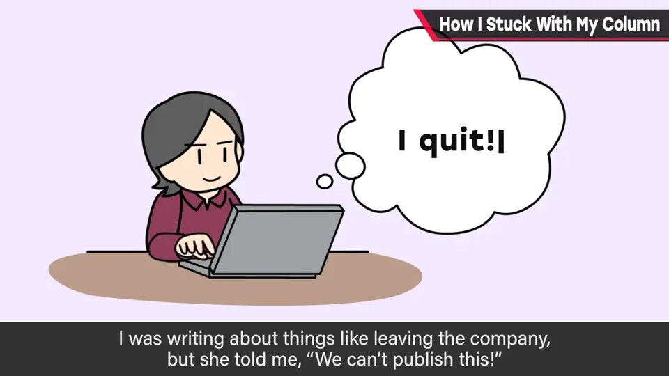
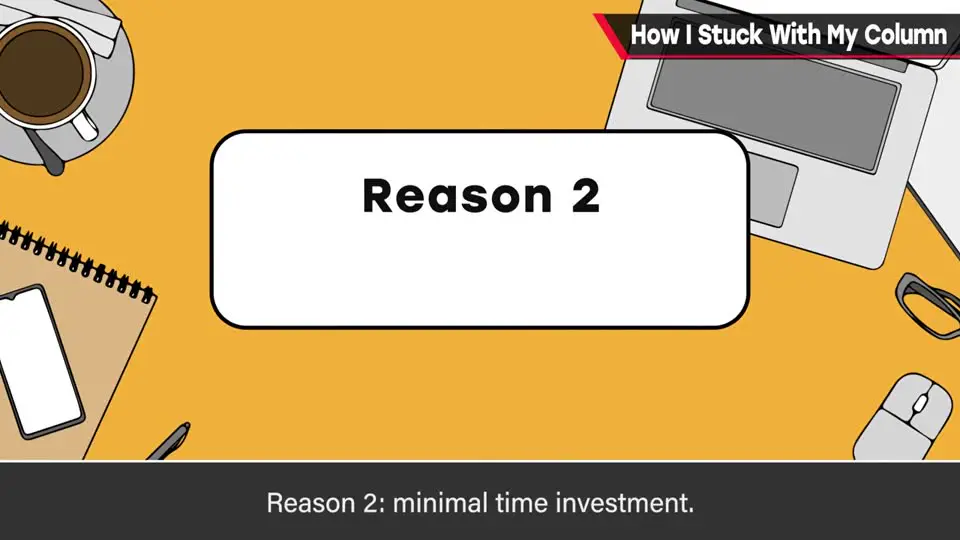
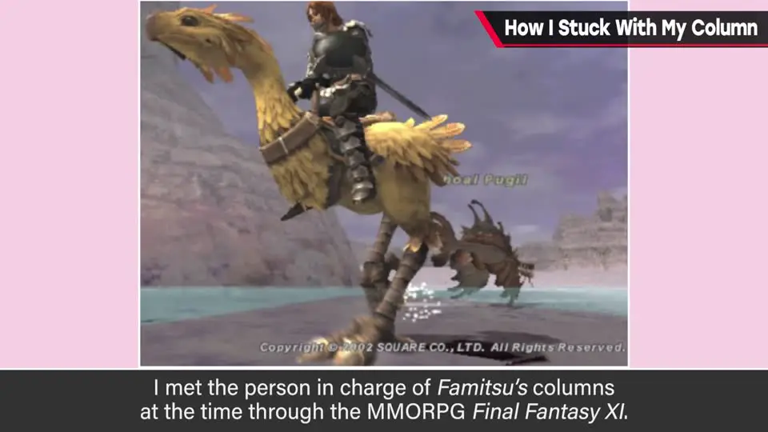

速览
樱井在《周刊 Fami 通》连载专栏 18 年 9 个月、共 640 回。开发忙到没时间玩别的游戏、在做的作品又不能写，随时可能断粮，但他守住了截稿日。能坚持的三个理由：① 输出——作为总监，传达东西不觉得苦；② 不花太多时间——每次约 1 小时写完；③ 不太在意——不背负使命感，比较随意地写。任何工作，尤其已成习惯的事，最好在一定程度上轻松看待。Fami 通专栏是本频道的前身；连载的契机是在《最终幻想 XI》里认识了专栏负责人。
1. 《周刊 Fami 通》专栏：18 年 9 个月 0:00
- 樱井曾在日本最大的游戏杂志《周刊 Fami 通》上连载专栏：历时 18 年 9 个月，共 640 回。他认为这作为游戏创作者在游戏杂志上的连载是世界最长；作为专栏也算长，但比不过伊集院光（在他之前就一直在连载）。
- 开始连载（2003 年）时，他是卡比系列的统括总监，刚因《卡比的空中滑翔（Kirby Air Ride）》回到总监岗位。
- 之后不久他离开 HAL 研究所，那时和编辑部有过几次争执——写了辞职的事，被说「这不能登」。
- 开发忙到几乎通宵、没时间玩别的游戏、在做的作品又没公布不能写——随时可能「断粮」。但实际上他守住了截稿日，坚持了下来。



2. 为什么能坚持？三个理由 1:26
作为总监，传达东西不觉得苦"] K --> R2["理由 2：不花太多时间
每次大约 1 小时左右写完"] K --> R3["理由 3：不太在意
不想着「必须写」「很多人在看」
不带使命感，比较随意地写"]

这三个理由都不是出于「为了游戏业界」之类的使命感。一想这些就只会越来越痛苦，所以任何工作都最好在一定程度上轻松看待——尤其是已经成为习惯的事：要让它变得能享受，而不是义务。
他感谢 Fami 通让他长期连载，但觉得是时候搁笔了，现在改用这个节目来传达。专栏里也有很多有用信息，有单行本（可能缺货），也有各种电子书版本。若没有写专栏的习惯，他可能连做这个节目都想不到——Fami 通专栏是本频道的前身。
3. 连载的契机：《最终幻想 XI》 3:31

小插曲：当时的 Fami 通编辑部专栏负责人与他在《最终幻想 XI》中相识——现实中没见过面，只是偶然一起组队玩，就被邀请「要不要给 Fami 通写专栏」。据说对方确信一定会很有意思。
樱井感慨：如果没有这件事，也许就没有这个节目——世事不知会因什么而起，很有意思。
自测题
1. 樱井的专栏连载了多久、多少回？在哪本杂志？
《周刊 Fami 通》，18 年 9 个月，共 640 回。 0:12
2. 专栏能坚持的三个理由是什么？
①输出：作为总监，传达东西不觉得苦；②不花太多时间：每次约 1 小时；③不太在意：不背负「必须写」「很多人在看」的使命感，随意地写。 1:30
3. 樱井是如何获得这个专栏连载的？
在 MMORPG《最终幻想 XI》中偶然与当时 Fami 通编辑部的专栏负责人组队相识（现实中没见过面），被邀请给 Fami 通写专栏。 3:33